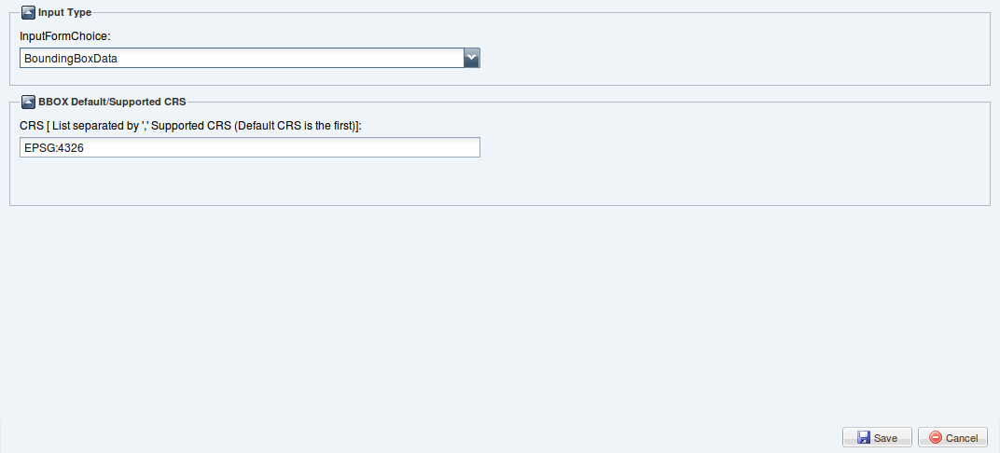
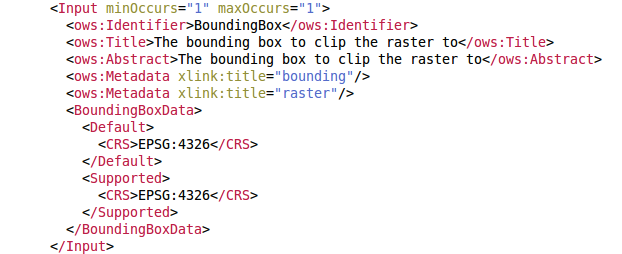

Indicates that this input shall be a BoundingBox data structure that is embedded in execute request, and provides a list of the CRSs supported in these Bounding Boxes.
The BoundingBox Input in the wizard can be defined by the following interface:

Default CRS: reference to one coordinate reference system(CRS). It is the first of the list in the CRS textfield. One(mandatory).
Supported CRS: reference to one coordinate reference system(CRS). One ore more(mandatory). Include for all of the CRSs supported for this input, including the default CRS.
The result we get (in WPS Current Process Description text area) to click the Save button is shown in the following:
